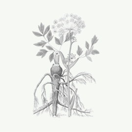
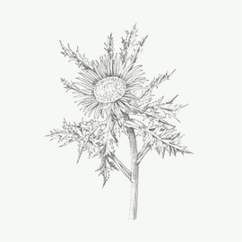

Польза бальзама Swedish bitter

Бальзам
«Swedish bitter»
Не имеет аналогов в мире по оздоровительной силе и широте лечебных свойств
Узнать подробнее о бальзамеФакты
- 1978 г.
- Европейцы используют бальзам «Swedish Bitter» еще с 1978 года
- 104 года
- 104 года прожил автор бальзама
- 40 показаний
- Больше 40 показаний к применению
- 24 языка
- 8 млн книг на 24 языках продано о бальзаме
Что из этого списка вы находите у себя?
- Сниженный тонус, не хватает энергии
- Прыщи, бородавки и растяжки
- Слабая память и концентрация
- Болеете чаще раза в год?
- Головные боли
- Синяки, шишки, ожоги, порезы долго не проходят
- Плохо засыпаете и часто просыпаетесь
Почему бальзам «Swedish Bitter» завоевал такую популярность?
Вот лишь несколько причин:
- Эффективность как при наружном, так и внутреннем применении, более 40 показаний к применению
- Случаи излечения с помощью сбора, когда традиционная медицина не смогла помочь
- Постоянно выявляются новые целительные свойства бальзама
- Эффект от применения можно увидеть сразу
Даже в странах с очень высоким уровнем медицины, таких как Германия и Австрия, бальзам Шведская Горечь продается в каждой аптеке!
Получить средство-панацею к себе в аптечкуЧто вы получите вместе с бальзамом «Swedish Bitter»?
-
Сбор трав
-
Инструкция по применению
-
Сертификат качества
Состав бальзама «Swedish Bitter»
- Все травы, входящие в сбор, собраны в альпийском заповеднике «Гуркталь» и имеют немецкий сертификат качества.
- Строго выверенные пропорции каждого компонента в составе
- Все травы в составе бальзама обладают сильным очищающим воздействием, при этом каждый из компонентов усиливает действие остальных.
- Соединяясь вместе они создают мощный очищающий эффект. Как оказалось, именно за счет этого эффекта бальзам способен исцелять многие болезни.
-

Корень дягиля (дудника) лекарственного
Angelica archangelica
-

Carlina acaulis
-
Cunnamomum camphora
-
Fraxinus ornus
-
Cammiphora molmol
-
Часть рецепта до сих пор находится в секрете
Theriak venezian
Гарантия качества
Если бальзам вам не понравится, мы вернем деньги. Сразу и без лишних вопросов. Мы дорожим своей репутацией и уверены в продукте на 100%
Этот эликсир – именно то средство, которое вам всегда захочется иметь дома в аптечке и рекомен- довать своим близким.
К каждой упаковке бальзама «Swedish Bitter» мы прикладываем немецкий сертификат качества.